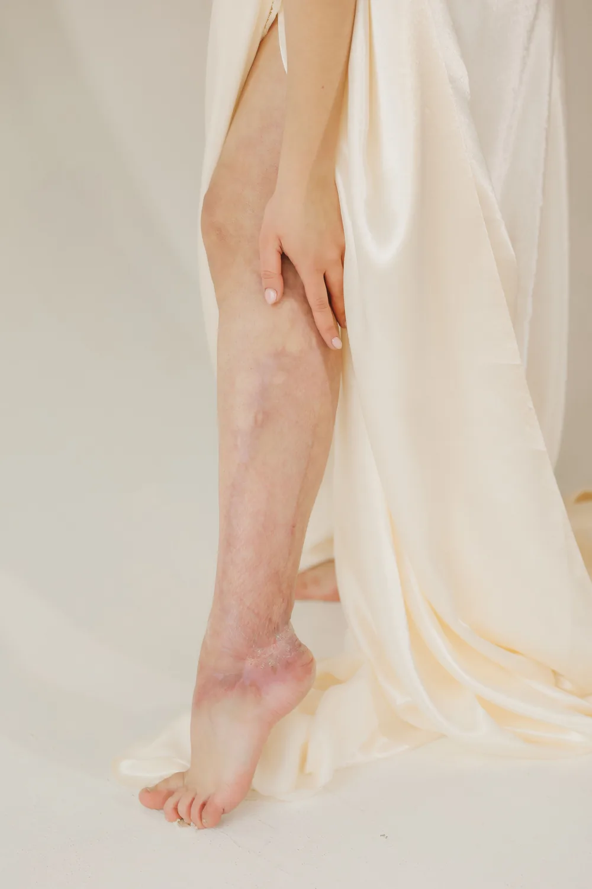

Pies fríos y piernas pesadas: ¿circulación arterial o venosa?
Los pies fríos antes de salir de la cama y las piernas que pesan después del almuerzo parecen el mismo problema de circulación, pero casi nunca lo son: una señala las arterias y la otra las venas. Esta es la diferencia que buscamos en el eco doppler para saber cuál es cuál.

La pregunta que de verdad importa no es si tienes mala circulación en las piernas, sino cuál de las dos cosas tienes: ¿los pies fríos aunque la casa esté caliente, o las piernas que pesan y se hinchan cuando cae la tarde? En Medellín el clima no es la explicación, aquí no hace el frío que sí justificaría unos pies helados en otras partes de Colombia, así que cuando la frialdad se repite todos los días, hay que mirar más allá del clima.
Pies fríos y circulación en las piernas: la pista arterial
Cuando las arterias de las piernas se estrechan (lo que en medicina se llama enfermedad arterial periférica), llega menos sangre a los pies. Mayo Clinic describe estos síntomas típicos:
- Dolor o calambres en la pantorrilla al caminar, que obligan a parar y mejoran con el descanso (se conoce como claudicación).
- Sensación de frío en un pie, comparado con el otro.
- Entumecimiento.
- En casos más avanzados, dolor incluso en reposo.
No todas las personas con enfermedad arterial periférica sienten dolor: muchas solo notan que un pie está más frío que el otro, o que les cuesta caminar la misma distancia de siempre.
Otras señales que acompañan esta pista son la piel más pálida en la pierna afectada, un pulso que casi no se siente en el pie, y una herida pequeña que tarda semanas en cerrar. Fumar, la diabetes, la hipertensión y el colesterol alto son los factores de riesgo que más se repiten.
Piernas pesadas al final del día: la pista venosa
La insuficiencia venosa funciona al revés: las válvulas de las venas no cierran bien, la sangre se queda más tiempo abajo y la pierna se siente pesada, se hincha o pica, casi siempre peor después de varias horas de pie o sentada y mejor al amanecer o al subir los pies sobre un cojín. Puedes ver la lista completa en nuestro artículo sobre los síntomas de la insuficiencia venosa crónica.
Las várices visibles ayudan a sospecharlo, pero no son obligatorias: hay insuficiencia venosa con la piel aparentemente lisa.
Si además ya notas venas abultadas o de color morado, ese es otro frente que se revisa aparte; en Seravena lo abordamos dentro del tratamiento de várices en Medellín. Y si lo que más te pesa es el día completo de pie, en el comercio, en salud o en cualquier trabajo sin pausas para sentarte, hay más causas detrás que puedes leer en piernas cansadas y pesadas: causas frecuentes.
Cómo lo diferenciamos en consulta en Medellín: pulsos, ITB y eco doppler
La primera diferencia no necesita ningún aparato: palpar el pulso en el pie, en el dorso y detrás del tobillo. Un pulso débil o ausente orienta hacia lo arterial; un pulso normal con la piel hinchada y venas visibles orienta hacia lo venoso.
El siguiente paso suele ser el índice tobillo-brazo (ITB), una prueba sencilla que compara la presión en el tobillo con la del brazo. Según Mayo Clinic, un resultado entre 1,0 y 1,4 suele ser normal, entre 0,90 y 0,99 es un límite que conviene vigilar, y por debajo de 0,90 apunta a enfermedad arterial periférica.
El eco doppler termina de aclarar la duda, pero no es el mismo examen para las dos cosas: el doppler arterial mide qué tan bien fluye la sangre hacia el pie y si hay una arteria estrecha; el doppler venoso revisa si las válvulas dejan que la sangre se devuelva, lo que se llama reflujo. En nuestro consultorio de El Poblado el eco doppler se hace el mismo día de la valoración, y el tipo de estudio que se pide depende de lo que encontramos al revisar el pulso y los síntomas, no de una lista fija.
En Seravena preferimos no quedarnos solo con la pregunta de si los pies están fríos: revisamos el pulso y, si hace falta, pedimos el eco doppler antes de decir que algo es nada más cansancio. Un pulso débil que se pasa por alto es la diferencia entre una recomendación sencilla y una complicación evitable.
Cuándo pueden presentarse juntas
La pista arterial y la venosa no se excluyen entre sí. Pueden coexistir, sobre todo en personas con diabetes de varios años, donde además se suma el riesgo de que una herida pase desapercibida por la pérdida de sensibilidad. Si ese es tu caso, el artículo sobre diabetes y circulación en las piernas explica esa combinación con más detalle.
Lo que este artículo no puede hacer es reemplazar el examen físico. Ninguna lista de síntomas por internet distingue con certeza una arteria estrecha de una vena que no cierra bien, y tampoco aplica si el frío en los pies aparece solo en un viaje a clima frío (a Bogotá, al Eje Cafetero, a un páramo) y se pasa rápido al volver: ese frío es normal y no tiene que ver con lo que describimos aquí.
Para mañana, antes de pensar en qué tratamiento necesitas, anota tres cosas: a qué hora del día te pesan más las piernas, si tus pies están fríos todo el tiempo o solo por momentos, y si algo cambia cuando subes los pies sobre un cojín un rato. Esa nota de pocos días es justo lo que preguntamos en la primera valoración, y ayuda a decidir si lo que sigue es revisar las arterias, las venas o las dos. Puedes agendar una valoración con eco doppler en nuestro consultorio de El Poblado cuando quieras dar ese paso.
Preguntas frecuentes
¿Los pies fríos siempre significan mala circulación arterial?
No siempre. El frío ambiental normal, como el que se siente en un viaje a clima frío, enfría los pies de cualquier persona y se resuelve rápido al calentarse. Lo que apunta a un problema arterial es la frialdad persistente, casi todos los días, sobre todo si es más marcada en un pie que en el otro o viene con dolor al caminar.
¿Qué diferencia hay entre el eco doppler arterial y el venoso?
Son dos estudios distintos aunque se hagan con el mismo equipo. El doppler arterial mide si la sangre llega bien hacia el pie y si alguna arteria está estrecha; el doppler venoso revisa si las válvulas de las venas dejan que la sangre se devuelva hacia abajo, lo que se conoce como reflujo. Según los síntomas y el pulso, se pide uno, el otro o los dos.
¿Puedo tener piernas pesadas y pies fríos por el mismo problema?
Puede pasar, aunque lo más frecuente es que sean dos problemas distintos que coexisten, sobre todo en personas con varios factores de riesgo como diabetes o tabaquismo. Por eso se revisan ambas pistas por separado en la valoración, en lugar de asumir que una explica la otra.
¿Cuándo debo consultar por pies fríos o piernas pesadas?
Conviene pedir una valoración si la frialdad en los pies o el peso en las piernas se repite casi todos los días durante varias semanas, si aparece dolor al caminar que mejora al descansar, o si notas cualquiera de las señales de alarma de este artículo. En Seravena agendamos por WhatsApp, sin necesidad de remisión.